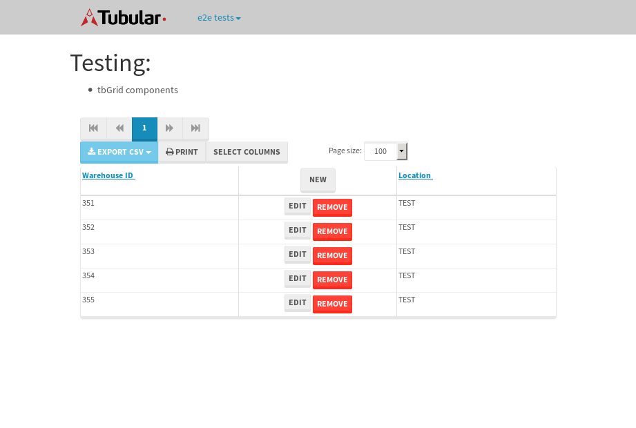

tbColumn.Grid Sorting - 32.921sTests: 5Skipped: 0Failures: 0 should sort data in ascending order then on descending order when sorting by Order Id column - 9.048sTests passed: 100.00%should order data in ascending order when click-sorting an unsorted text column - 5.372sTests passed: 100.00%should order data in descending order when click-sorting an ascending-sorted text column - 6.643sTests passed: 100.00%should order data in ascending order when click-sorting an unsorted date column - 5.573sTests passed: 100.00%should order data in descending order when click-sorting twice an unsorted date column - 6.284sTests passed: 100.00%
tbEmptyForm - 2.102sTests: 3Skipped: 0Failures: 0 should have an empty required field - 0.529sTests passed: 100.00%should not be able to click on save - 0.025sTests passed: 100.00%should load default value for numeric field - 0.035sTests passed: 100.00%
Tubular Filters.tbColumnFilter - 100.354sTests: 12Skipped: 0Failures: 0 should cancel filtering when clicking outside filter-popover - 8.101sTests passed: 100.00%should disable Value text-input for "None" filter - 5.788sTests passed: 100.00%should disable apply button for "None" filter - 5.931sTests passed: 100.00%should decorate popover button when showing data is being filtered for its column - 11.637sTests passed: 100.00%should correctly filter data for the "Equals" filtering option - 7.986sTests passed: 100.00%should correctly filter data for the "Not Equals" filtering option - 7.913sTests passed: 100.00%should correctly filter data for the "Contains" filtering option - 7.629sTests passed: 100.00%should correctly filter data for the "Not Contains" filtering option - 8.633sTests passed: 100.00%should correctly filter data for the "Starts With" filtering option - 7.018sTests passed: 100.00%should correctly filter data for the "Not Starts With" filtering option - 6.02sTests passed: 100.00%should correctly filter data for the "Ends With" filtering option - 5.979sTests passed: 100.00%should correctly filter data for the "Not Ends With" filtering option - 6.276sTests passed: 100.00%
Tubular Filters.tbColumnDateTimeFilter - 125.078sTests: 12Skipped: 0Failures: 0 should cancel filtering when clicking outside filter-popover - 6.337sTests passed: 100.00%should disable Value text-input for "None" filter - 5.55sTests passed: 100.00%should disable apply button for "None" filter - 5.798sTests passed: 100.00%should clear filtering when clicking on Clean button - 16.982sTests passed: 100.00%should decorate popover button when showing data is being filtered for its column - 11.042sTests passed: 100.00%should correctly filter data for the "Equals" filtering option - 6.604sTests passed: 100.00%should correctly filter data for the "Not Equals" filtering option - 6.475sTests passed: 100.00%should correctly filter data for the "Between" filtering option - 10.996sTests passed: 100.00%should correctly filter data for the "Greater-or-equal" filtering option - 10.89sTests passed: 100.00%should correctly filter data for the "Greater" filtering option - 11.098sTests passed: 100.00%should correctly filter data for the "Less-or-equal" filtering option - 11.036sTests passed: 100.00%should correctly filter data for the "Less" filtering option - 11.279sTests passed: 100.00%
Tubular Filters.tbColumnOptionsFilter - 77.755sTests: 3Skipped: 0Failures: 0 should cancel filtering when clicking outside filter-popover - 7.428sTests passed: 100.00%should decorate popover button when showing data is being filtered for its column - 10.7sTests passed: 100.00%should filter column-elements in accordance to the selected filter when selecting a single option - 48.175sTests passed: 100.00%
Tubular Filters.tbTextSearch - 44.67sTests: 5Skipped: 0Failures: 0 min-chars is not set - 0.087sTests passed: 100.00%should filter data in searchable-column customer name to matching inputted text, starting from 3 characters - 5.911sTests passed: 100.00%should filter data in searchable-column shipper city to matching inputted text, starting from 3 characters - 11.077sTests passed: 100.00%should show clear button when there is inputted text only - 5.608sTests passed: 100.00%should clear filtering when clicking clear button - 15.938sTests passed: 100.00%
tbForm related components.tbCheckboxField - 16.252sTests: 2Skipped: 0Failures: 0 should save changes on "SAVE" - 11.921sTests passed: 100.00%should discard changes on "CANCEL" - 2.616sTests passed: 100.00%
tbForm related components.tbDropDownEditor - 16.467sTests: 5Skipped: 0Failures: 0 should set initial input value to the value of "value" attribute when defined - 2.513sTests passed: 100.00%should show the component name value in a label field when "showLabel" attribute is true - 1.876sTests passed: 100.00%should show a help field equal to this attribute, is present - 2.604sTests passed: 100.00%should submit modifications to item/server when clicking form "Save" - 3.592sTests passed: 100.00%should NOT submit modifications to item/server when clicking form "Cancel" - 2.74sTests passed: 100.00%
tbForm related components.tbTextArea - 15.086sTests: 7Skipped: 0Failures: 0 should set initial input value to the value of "value" attribute when defined - 1.921sTests passed: 100.00%should be invalidated when the number of chars is not in the range of "min" and "max" attributes - 1.604sTests passed: 100.00%should show the component name value in a label field when "showLabel" attribute is true - 0.767sTests passed: 100.00%should show a help field equal to this attribute, is present - 0.769sTests passed: 100.00%should require the field when the attribute "required" is true - 0.981sTests passed: 100.00%should submit modifications to item/server when clicking form "Save" - 4.095sTests passed: 100.00%should NOT submit modifications to item/server when clicking form "Cancel" - 2.222sTests passed: 100.00%
tbForm related components.tbDateEditor - 9.321sTests: 6Skipped: 0Failures: 0 should set initial date value to the value of "value" attribute when defined - 0.862sTests passed: 100.00%should be invalidated when the date is not in the range of "min" and "max" attributes - 1.537sTests passed: 100.00%should show the component name value in a label field when "showLabel" attribute is true - 1.08sTests passed: 100.00%should show a help field equal to this attribute, is present - 0.77sTests passed: 100.00%should submit modifications to item/server when clicking form "Save" - 2.193sTests passed: 100.00%should NOT submit modifications to item/server when clicking form "Cancel" - 2.037sTests passed: 100.00%
tbForm related components.tbTypeaheadEditor - 19.177sTests: 7Skipped: 0Failures: 0 should show an options list when there is an API-info/component entered-data - 2.074sTests passed: 100.00%should select the option clicked - 2.423sTests passed: 100.00%should show a "delete" button when an option/match is selected, and delete the option if button is clicked - 3sTests passed: 100.00%should show a label value equal to the component name when "showLabel" attribute is true - 1.322sTests passed: 100.00%should require a value when "require" attribute is true - 3.023sTests passed: 100.00%should submit modifications to item/server when clicking form "Save" - 3.712sTests passed: 100.00%should NOT submit modifications to item/server when clicking form "Cancel" - 1.7sTests passed: 100.00%
tbForm related components.tbSimpleEditor - 12.852sTests: 9Skipped: 0Failures: 0 should set initial input value to the value of "value" attribute when defined - 0.755sTests passed: 100.00%should be invalidated when the number of chars is not in the range of "min" and "max" attributes - 1.414sTests passed: 100.00%should show the component name value in a label field when "showLabel" attribute is true - 0.91sTests passed: 100.00%should set input placeholder to the value of "placeholder" attribute - 0.985sTests passed: 100.00%should validate the control using the "regex" attribute, if present - 1.046sTests passed: 100.00%should show a help field equal to this attribute, is present - 1.127sTests passed: 100.00%should require the field when the attribute "required" is true - 1.135sTests passed: 100.00%should submit modifications to item/server when clicking form "Save" - 3.705sTests passed: 100.00%should NOT submit modifications to item/server when clicking form "Cancel" - 1.024sTests passed: 100.00%
tbForm related components.tbNumericEditor - 11.365sTests: 7Skipped: 0Failures: 0 should set initial component value to the value of "value" attribute when defined - 0.699sTests passed: 100.00%should be invalidated when the entered number is not in the range of "min" and "max" attributes - 1.245sTests passed: 100.00%should show the component name value in a label field when "showLabel" attribute is true - 0.782sTests passed: 100.00%should show a help field equal to this attribute, is present - 0.863sTests passed: 100.00%should require the field when the attribute "required" is true - 1.288sTests passed: 100.00%should submit modifications to item/server when clicking form "Save" - 4.448sTests passed: 100.00%should NOT submit modifications to item/server when clicking form "Cancel" - 1.402sTests passed: 100.00%
tbForm Connection Error NoModelKey - 1.967sTests: 1Skipped: 0Failures: 0 tbForm connection error functionality - 0.004sTests passed: 100.00%
tbForm Connection Error NoServerUrl - 1.878sTests: 1Skipped: 0Failures: 0 tbForm connection error functionality - 0.002sTests passed: 100.00%
tbGridComponents - 27.317sTests: 6Skipped: 0Failures: 1 should add item with newRow method - 2.77sTests passed: 100.00%should add item with newRow method and cancel action - 0.453sTests passed: 100.00%should update item with tbSaveButton - 1.194sTests passed: 100.00%should NOT update item on cancel Update action - 0.46sTests passed: 100.00%should remove item with tbRemoveButton - 20.354sExpected 5 not to be 5, 'should remove the row from the table'.✗Tests passed: 50.00%should NOT remove item on cancel Remove action - 0.677sTests passed: 100.00%
tbGridPager.navigation buttons - 5.119sTests: 1Skipped: 0Failures: 0 should perform no action when clicking on the numbered navigation button corresponding to the current-showing results page - 0.713sTests passed: 100.00%
tbGridPager.navigation buttons.first/non-last results page related functionality - 3.11sTests: 2Skipped: 0Failures: 0 should disable "first" and "previous" navigation buttons when in first results page - 0.119sTests passed: 100.00%should enable "last" and "next" navigation buttons when in a results page other than last - 2.991sTests passed: 100.00%
tbGridPager.navigation buttons.last/non-first results page related functionality - 1.296sTests: 2Skipped: 0Failures: 0 should disable "last" and "next" navigation buttons when in last results page - 0.656sTests passed: 100.00%should enable "first" and "previous" navigation buttons when in a results page other than first - 0.64sTests passed: 100.00%
tbGridPager.page navigation - 5.983sTests: 5Skipped: 0Failures: 0 should go to next results page when clicking on next navigation button - 1.796sTests passed: 100.00%should go to previous results page when clicking on previous navigation button - 1.626sTests passed: 100.00%should go to last results page when clicking on last navigation button - 0.692sTests passed: 100.00%should go to first results page when clicking on first navigation button - 1.241sTests passed: 100.00%should go to corresponding results page when clicking on a numbered navigation button - 0.628sTests passed: 100.00%
tbGridPagerInfo - 5.937sTests: 2Skipped: 0Failures: 0 should show text in accordance to numbered of filter rows and current results-page - 1.966sTests passed: 100.00%should show count in footer - 0.026sTests passed: 100.00%
tbPageSizeSelctor - 14.466sTests: 4Skipped: 0Failures: 0 should filter up to 10 data rows per page when selecting a page size of "10" - 3.23sTests passed: 100.00%should filter up to 20 data rows per page when selecting a page size of "20" - 2.808sTests passed: 100.00%should filter up to 50 data rows per page when selecting a page size of "50" - 3.545sTests passed: 100.00%should filter up to 100 data rows per page when selecting a page size of "100" - 3.352sTests passed: 100.00%
tbSingleForm - 13.409sTests: 8Skipped: 1Failures: 1 should load correct info - 0s***Skipped***Tests passed: 0%should change customer name - 1.749sTests passed: 100.00%should save it - 2.118sExpected '' to be 'Saved'.✗Tests passed: 50.00%should clear the inputs - 1.887sTests passed: 100.00%should update - 1.848sTests passed: 100.00%should reset editor - 2.104sTests passed: 100.00%should not save if not Changes - 1.889sTests passed: 100.00%should not be able to click on save - 1.812sTests passed: 100.00%

{kind=link}